Precios de las entradas
La única entrada anticipada que se venderá este año 2020 sera la del Jueves 20, las primeras entradas salen a 12€ + copa + pase y las segundas entradas a 15€ + copa + pase.
¿Qué son los pases?
Los pases son unos bonos que se regalarán a los clientes que compren la entrada anticipada del Jueves 20, con el que podrán acceder gratis a la carpa los dias: